TL;DR
Good managers assign tasks that can be executed reliably. HRL managers get sparse feedback, making goal assignments suboptimal. We reward the manager for predictable coarse-grained worker dynamics, improving behavior in irreversible, risky scenarios.
Abstract
Hierarchical Reinforcement Learning (HRL) intends to separate strategic planning from primitive execution. It has been widely successful in solving long-horizon and complex tasks, where flat-RL algorithms have difficulty in learning. However, while the low-level agent in HRL benefits from dense feedback and abundant trial opportunities, the high-level agent receives sparse, delayed feedback from the environment and its performance depends on the low-level execution capability. In this paper, we study whether subgoal selection by the high-level agent can be performed more strategically, by providing it with dynamics-aware intrinsic motivation. Since motivation based on primitive transition dynamics would require broad coverage of the state-action space, we propose to use coarse dynamics, i.e., environment transitions aggregated over multiple steps at the temporal scale at which the high-level agent operates. This approach stabilizes the high-level policy by learning to minimize the predictive uncertainty associated with the coarse dynamics, and provides a guided structure for navigation. We model the predictive uncertainty by evaluating different dispersion metrics as approximated by a Mixture Density Network (MDN). Empirically, we observe that a dense, dynamics-aware intrinsic reward leads to risk-averse subgoal selection, enabling it to outperform state-of-the-art HRL methods in non-stationary long-horizon environments.
Key Contributions
- Intrinsic motivation for the high-level policy. Most HRL work shapes only the low-level reward; S3 instead delivers dense, dynamics-aware feedback to the Manager, tackling the root cause of non-stationarity rather than its symptoms.
-
Coarse dynamics via a Mixture Density Network.
The MDN is trained jointly with the hierarchy on tuples
(st, gt, st+c), capturing multi-modal, heteroscedastic outcomes that a deterministic predictor would blur. -
Potential-based, policy-invariant shaping.
The intrinsic reward takes the form
rhiint = γΦt+c − Φtwith Φ set to a variance-based dispersion penalty — preserving the optimal policy by the Ng et al. (1999) / Wiewiora et al. (2003) framework. - Strong empirical gains on bottleneck tasks. S3 outperforms HIRO and HRAC on Ant Fall and Ant Push, and is robust across manager horizons c ∈ {5, 10, 20, 50, 100}, with c = 10 as the stability sweet spot.
Method
At each high-level step the Manager proposes a subgoal gt and the Worker rolls out for c steps to reach a terminal state st+c. An MDN predicts the conditional distribution p(st+c | st, gt) as a mixture of Gaussians, trained by supervised maximum likelihood on the realised triples. We take the total variance (trace of the covariance) of this mixture as a potential Φ(s, g), so that subgoals with diffuse, uncertain outcomes are discouraged while predictably reachable ones are preferred. Because the intrinsic reward is the discounted difference of potentials, it telescopes across episodes and leaves the optimal high-level policy unchanged — but delivers the dense signal the Manager was previously missing. S3 sits on top of an existing HRL backbone (we use HRAC) and only modifies the high-level reward term.
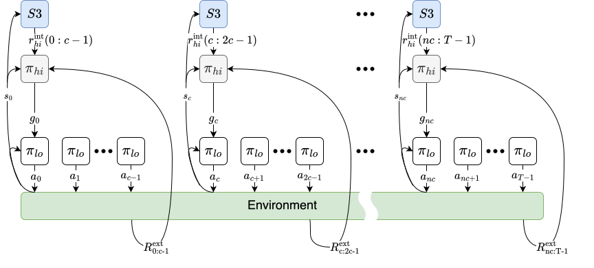
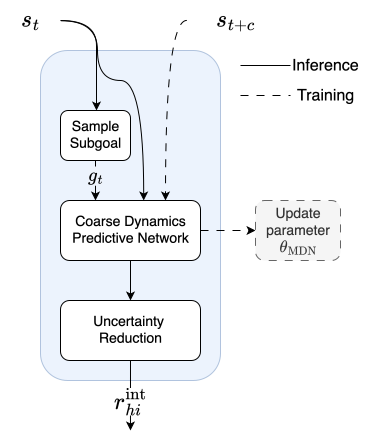
Results
Table 1. Mean success rate (% episodes reaching the final goal) ± SEM over 5 random seeds, trained for 5M environment steps. Bold marks the best result per environment.
| Environment | S3 (ours) | HIRO | HRAC |
|---|---|---|---|
| Ant Fall | 0.374 ± 0.054 | 0.059 ± 0.059 | 0.000 ± 0.000 |
| Ant Push | 0.186 ± 0.107 | 0.134 ± 0.101 | 0.180 ± 0.180 |
| Ant Maze | 0.827 ± 0.024 | 0.790 ± 0.067 | 0.832 ± 0.039 |
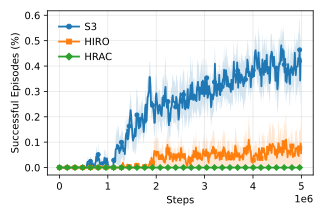
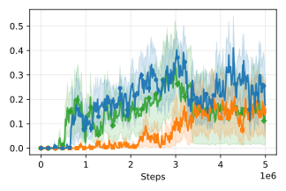
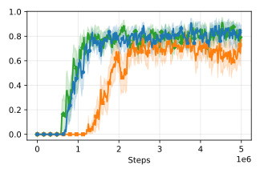
Figure 2. Success rate over 5M steps (mean ± 1 s.e.m. over 5 seeds). S3 (blue) clears Ant Fall where HIRO/HRAC stall near zero, and leads on Ant Push; Ant Maze is a near tie because geometric path-finding dominates over coarse-dynamics variance.
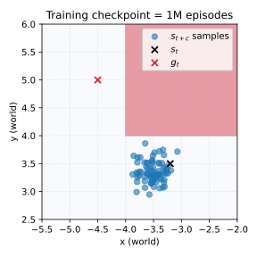
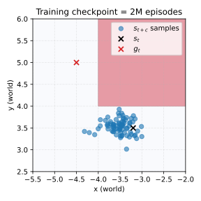
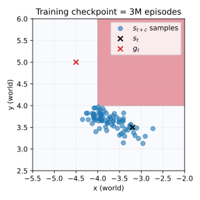
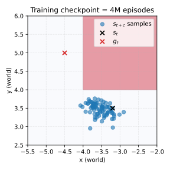
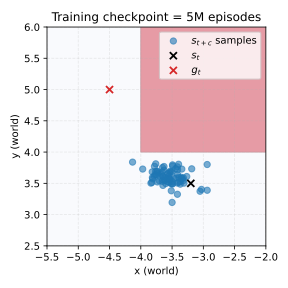
Figure 4. Worker terminal states st+c in Ant Push across training checkpoints (1M–5M episodes). The red quadrant is an irreversibly hazardous push direction. Over training the S3-shaped Manager progressively concentrates outcomes away from the hazardous region and closer to gt.
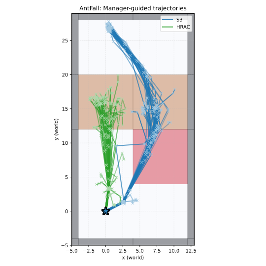
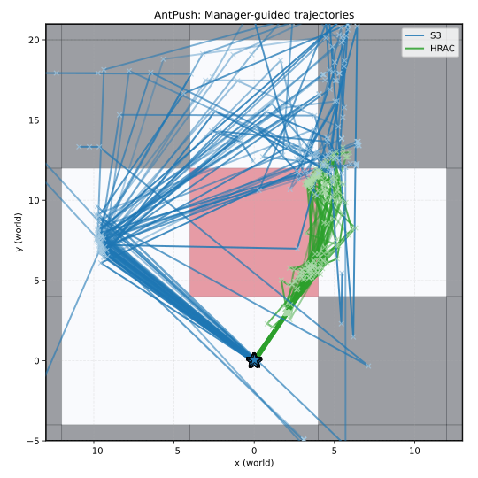
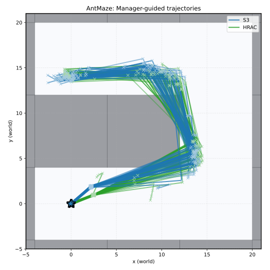
Figure 5. Manager-guided trajectories over 50 eval runs (S3 in blue, HRAC in green). S3 concentrates subgoals near the bridge region of Ant Fall and produces narrow, aligned corridors on Ant Maze; on Ant Push it re-plans around the block whenever the coarse-dynamics model flags high uncertainty.
Citation
@inproceedings{srivastava2026s3,
title = {S3: Stable Subgoal Selection by Constraining Uncertainty of Coarse
Dynamics in Hierarchical Reinforcement Learning},
author = {Srivastava, Kshitij Kumar and Jerath, Kshitij},
booktitle = {Adaptive and Learning Agents Workshop (ALA) at AAMAS},
year = {2026}
}Acknowledgments
This research has been funded by the Office of Naval Research (N00014-23-1-2744 and N00014-24-1-2634).